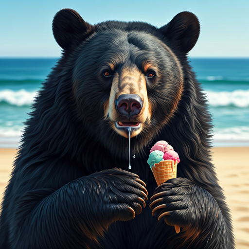

Los tintes naturales ofrecen diversos beneficios como:
- Helados que calientan tu corazon
- Elaborado con sabores naturales, sin saborizantes
- Tiene una gran variedad de presentaciones, desde pequeños antojos hasta reuniones familiares
- Sus envases son ecoamigables, estan elaborados con materiales biodegradables
- son accesibles al bolsillo